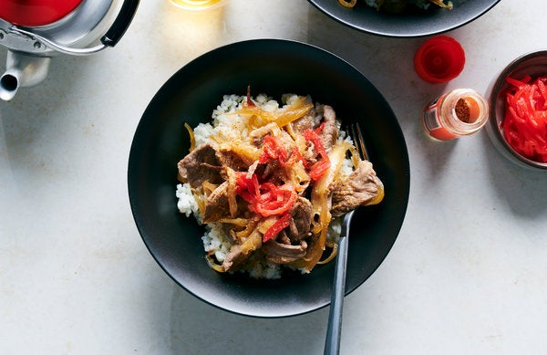

Gyudon

Description
A popular fast-food dish in Japan. Gyudon is a quick-simmered mixure of thinly sliced
beef and crisp-tender onions cooked in a sweet soy broth that is seasoned with fresh ginger (optional).
Ingredients
- 1lb boneless beef rib-eye
- 1 1/4 teaspoons instant dashi
- 1/4 cup soy sauce
- 1/4 cup Sake
- 3 tablespoons mirin
- 3 tablespoons sugar
- 1 medium onion, halved, then thinly sliced
- 1 1/2 teaspoon finely grated fresh ginger
- Cooked Rice
Steps
- Cut beef crosswise into 2 pieces, then set your beef in the freezer for at least 1 hour to
freeze until firm. Once the beef is very firm, slice it very thinly against the grain,
ideally about ⅛-inch thick. Set aside at room temperature.
- Bring 1¼ cups water to a boil in a large skillet. Whisk in instant dashi until combined.
- Add the soy sauce, sake, mirin and sugar, stir to combine, and boil over high until flavors
meld and mixture starts to reduce, about 8 minutes. Add the sliced onion and cook over
medium until onion just starts to soften, about 5 minutes.
- Stir in the beef and cook, turning the sliced beef frequently using tongs, until beef is
just barely cooked and loses any traces of pink, about 3 minutes. Stir in the fresh ginger
and cook for 1 more minute.
- Divide rice among bowls and top with beef mixture and any juices. Serve with pickled ginger
and sprinkle with togarashi, if desired.